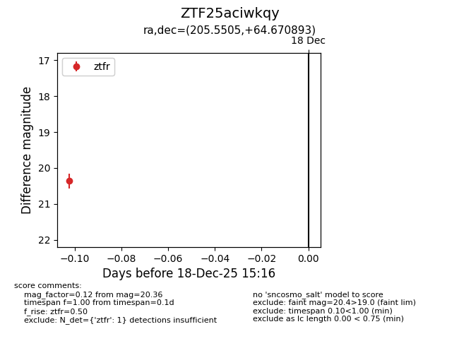
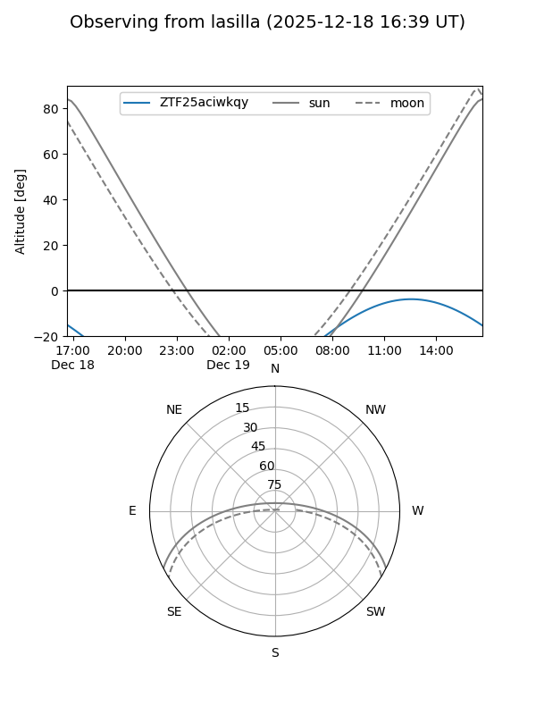
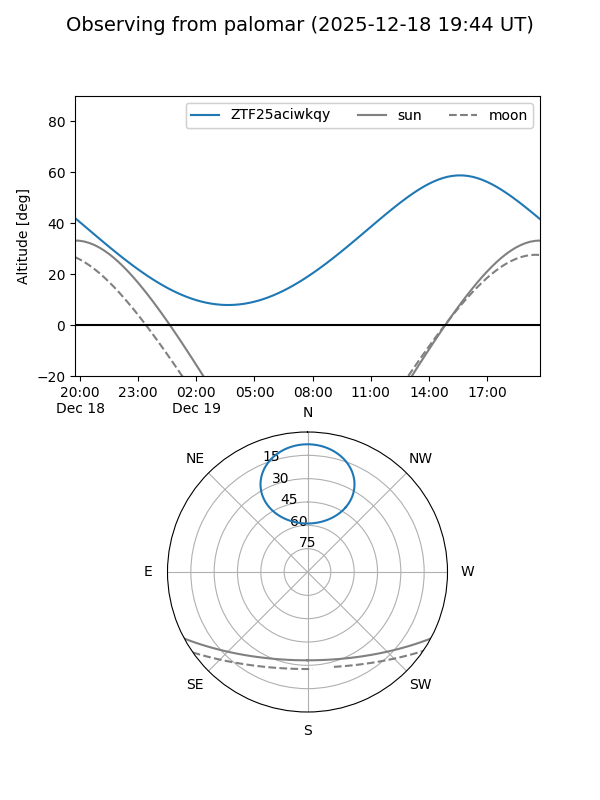

ZTF25aciwkqy
Target ZTF25aciwkqy at 2025-12-18 15:17
Aliases and brokers:
FINK: fink-portal.org/ZTF25aciwkqy
Lasair: lasair-ztf.lsst.ac.uk/objects/ZTF25aciwkqy
ALeRCE: alerce.online/object/ZTF25aciwkqy
alt names
ZTF25aciwkqy (ztf,fink_ztf)
Coordinates:
equatorial (ra, dec) = 205.5505,+64.67089
equatorial (HMS+DMS) = 13:42:12.12,+64:40:15.21
galactic (l, b) = (114.2305,+51.59119)
Photometry
last ztfr=20.36
1 ztfr detections
Lightcurve

Visibility


Additional plots